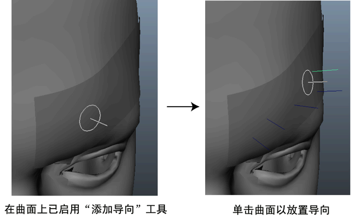
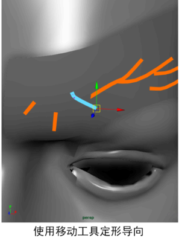

如果尚未创建基于导向的描述，请参见使用样条线曲线创建头发或毛发或实例化基本体和归档几何体。
将导向添加到网格对象
使用“添加或移动导向”(Add or Move Guides)工具将导向放置在网格对象上。可以使用导向定位和定形所有的基本体类型，包括归档几何体。
将导向添加到网格对象
- 在 XGen 编辑器中选定基于导向的描述时，选择“添加或移动导向”(Add or Move Guides)工具
 。
。
将光标悬停在选定曲面上时，将显示一个圆形图标，表示您可以向网格添加导向。
- 单击曲面以放置导向。
导向将显示在选定网格的曲面上。
- （可选）若要增大或减小“添加或移动导向”(Add or Move Guides)工具的半径，请按住 B 键拖动。

- 预览描述。请参见预览头发、毛发和实例化几何体。
使用雕刻导向工具定形和缩放导向
使用“雕刻导向工具”(Sculpt Guides Tool)可定形和缩放样条线基本体的导向。它不能用于其他基本体类型。
提示： 如果使用 Maya“选择工具”(Select Tool)选择了一个或多个导向，则“雕刻导向工具”(Sculpt Guides Tool)只会影响这些导向。要确保在该工具的半径范围内雕刻所有导向，请在开始雕刻之前取消选择（“选择 > 取消选择全部”(Select > Deselect All)）所有导向。
使用“雕刻导向工具”(Sculpt Guides Tool)定形
- 通过在 XGen 工具架中单击此图标
 ，激活“雕刻导向工具”(Sculpt Guides Tool)。
，激活“雕刻导向工具”(Sculpt Guides Tool)。
- 拖过导向以便为它们定形和设定姿势。
注： 当前视图之外的一些导向（如网格对象背面上的导向）可能会受到“雕刻导向工具”(Sculpt Guides Tool)的影响。先选择再隐藏（）不希望受到“雕刻导向工具”(Sculpt Guides Tool)影响的导向。
- 在显示的“工具设置”(Tool Settings)窗口中，编辑设置以修改雕刻工具影响导向的方式。
请参见雕刻导向工具设置。
- 预览描述以将导向形状应用于样条线基本体。请参见预览头发、毛发和实例化几何体。
提示： 若要在雕刻时创建更复杂、更有趣的形状，可能需要将更多的控制顶点添加到导向。请参见使用 XGen 导向。
使用“雕刻导向工具”(Sculpt Guides Tool)缩放导向
- 通过在 XGen 工具架中单击此图标 ，激活“雕刻导向工具”(Sculpt Guides Tool)。
- 在显示的“工具设置”(Tool Settings)窗口的“笔刷设置”(Brush Settings)下，禁用“锁定长度”(Lock Length)。
禁用“锁定长度”(Lock Length)时，可以通过雕刻更改导向长度。
- 拖动导向以缩放它们。
- 预览描述以查看缩放的样条线。请参见预览头发、毛发和实例化几何体。
通过编辑导向 CV 定形和缩放导向
可以通过选择再编辑导向 CV 来修改 XGen 导向的形状。也可以使用“工具”(Utilities)（如导向作为曲线、重新定形导向和拉直导向）编辑导向形状。
通过编辑 CV 定形导向
 使用 单击要定形的导向，并从显示的标记菜单中选择“导向控制点”(Guide Control Points)。
使用 单击要定形的导向，并从显示的标记菜单中选择“导向控制点”(Guide Control Points)。
- Maya 将切换到组件选择模式，允许您选择导向上的 CV。
- 使用“移动”(Move)、“旋转”(Rotate)和“缩放”(Scale)工具为导向定形。

如果您在获取所需形状时遇到问题，请将控制顶点添加到导向中。
- （可选）若要将控制顶点添加到导向，请在 XGen 编辑器中，单击“基本体”(Primitives)选项卡。
- （可选）在“基本体属性”(Primitives Attributes)部分中，单击“重建”(Rebuild)，并在“重建导向”(Rebuild Guides)窗口中增加 CV 计数值。请参见使用 XGen 导向。
- 通过在导向上单击右键 ()，并从出现的标记菜单中选择“对象模式”(Object Mode)，从而返回对象选择模式。